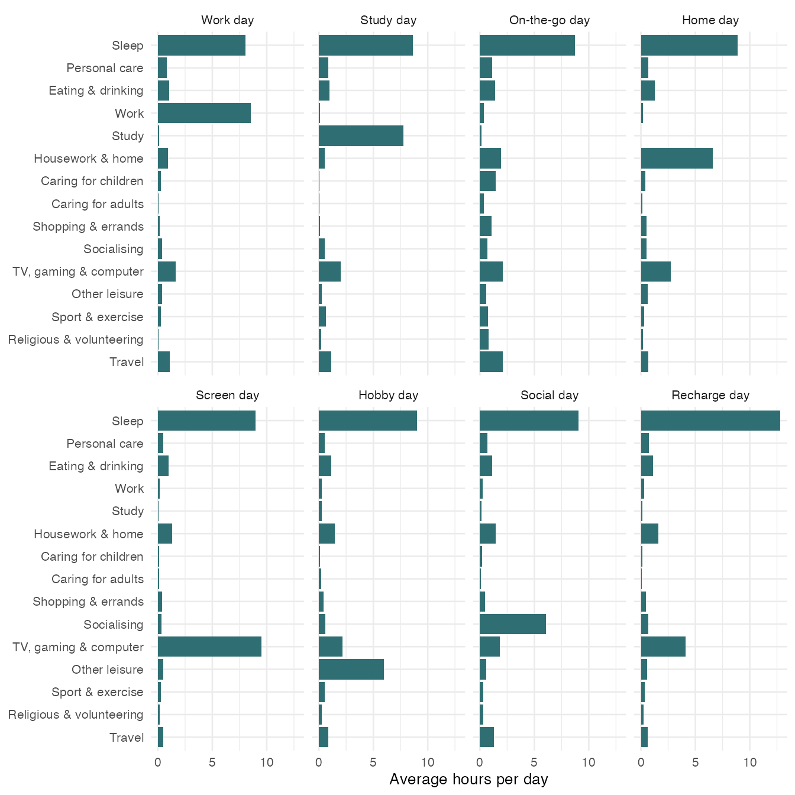

Whose Day Is It? Using dayalike
dayalike.RmdWho this is for
dayalike is for anyone curious about how they spend
their time. It answers one question:
Which kind of day did I have, and what makes it that kind of day?
It compares one day of your time use with eight types of day found in the diaries of 6,146 people in the 2025 American Time Use Survey (ATUS), run by the U.S. Bureau of Labor Statistics.
Install the package
# install.packages("remotes")
remotes::install_github("ETC5523-2026/etc5523-assignment-4-tzhu0035-png")Launch and use the app
run_app()The app has three pages.
Your day. In the sidebar, either start from an example day or enter the hours you spent on each of the 15 activities during one day, from waking up to waking up the next morning. Use quarter hours (0.25 = 15 minutes) and leave activities you did not do at 0. Tick Show 7 more activities to see the less common ones. The box at the bottom keeps a running total out of 24 hours.
The main panel then shows:
- Your best match: the type your day looks most like, a one-line description, roughly how many hours of your day would need to move to match it, the next closest type, and who usually has this kind of day.
- What makes your day this type? One row per activity: red dots are your hours and grey dots are the average day of the type. The rows are sorted from the biggest difference to the smallest, so the top rows explain most of the match. Use Compare my day with to compare with any other type.
- How close is each type? The hours that would need to move to match each type. Shorter bars are closer. The dashed line marks a close match: 95% of real survey days are within that many hours of their closest type.
The eight types shows the average day of each type and who has it. About the data explains the source and the limitations below.
The app explains what is wrong instead of failing when the day cannot be matched: when the hours add up to more than 24, when nothing has been entered, when a box is left empty, and when no type is a close match. It also warns when more than two hours of the day are not assigned to any activity, because an emptier day looks less like every type.
The eight types
day_types |>
select(day_type, tagline, share, pct_weekend, mean_age, pct_employed) |>
mutate(across(where(is.numeric), round)) |>
knitr::kable(col.names = c("Day type", "What it looks like", "% of days",
"% on a weekend", "Average age", "% employed"))| Day type | What it looks like | % of days | % on a weekend | Average age | % employed |
|---|---|---|---|---|---|
| Work day | Most of the day goes to paid work. | 34 | 8 | 42 | 99 |
| Study day | Classes and study fill the day. | 4 | 12 | 20 | 28 |
| On-the-go day | Out and about: travel, errands and caring for others. | 14 | 37 | 48 | 48 |
| Home day | Housework, cooking and looking after the home. | 13 | 34 | 56 | 37 |
| Screen day | Long stretches of TV, gaming or computer time. | 13 | 44 | 55 | 33 |
| Hobby day | Time for reading, relaxing, music and hobbies. | 5 | 40 | 54 | 34 |
| Social day | Hours spent with friends, family or at social events. | 4 | 54 | 49 | 50 |
| Recharge day | A long sleep, well beyond the usual. | 11 | 46 | 43 | 45 |
day_type_profiles |>
left_join(activity_categories, by = "category") |>
mutate(label = factor(label, levels = rev(activity_categories$label))) |>
ggplot(aes(x = minutes / 60, y = label)) +
geom_col(fill = "#2F6F73") +
facet_wrap(~day_type, nrow = 2) +
labs(x = "Average hours per day", y = NULL) +
theme_minimal(base_size = 10)
Use the functions directly
Describe a day as a named vector of hours. Names come from
activity_categories$category; activities you leave out
count as zero.
my_day <- c(sleep = 7.5, personal_care = 1, eating = 1, work = 9,
housework = 1, screen = 2.5, travel = 1.5, exercise = 0.5)
match_my_day(my_day)
#> # A tibble: 8 × 5
#> rank day_type tagline hours_apart close_match
#> <int> <fct> <chr> <dbl> <lgl>
#> 1 1 Work day Most of the day goes to paid work. 2.13 TRUE
#> 2 2 On-the-go day Out and about: travel, errands an… 8.86 FALSE
#> 3 3 Recharge day A long sleep, well beyond the usu… 9.95 FALSE
#> 4 4 Home day Housework, cooking and looking af… 10.1 FALSE
#> 5 5 Social day Hours spent with friends, family … 10.1 FALSE
#> 6 6 Hobby day Time for reading, relaxing, music… 10.1 FALSE
#> 7 7 Study day Classes and study fill the day. 10.3 FALSE
#> 8 8 Screen day Long stretches of TV, gaming or c… 10.5 FALSEThe best match is a Work day: only about two hours of this day would have to move for it to look like the average Work day, and it is a close match. Every other type is more than eight hours away.
compare_day() shows why, activity by activity:
compare_day(my_day, "Work day")
#> # A tibble: 15 × 5
#> category label you typical difference
#> <chr> <chr> <dbl> <dbl> <dbl>
#> 1 screen TV, gaming & computer 2.5 1.64 0.862
#> 2 sleep Sleep 7.5 8.07 -0.565
#> 3 work Work 9 8.53 0.474
#> 4 other_leisure Other leisure 0 0.409 -0.409
#> 5 travel Travel 1.5 1.09 0.406
#> 6 socialising Socialising 0 0.355 -0.355
#> 7 childcare Caring for children 0 0.291 -0.291
#> 8 exercise Sport & exercise 0.5 0.255 0.245
#> 9 personal_care Personal care 1 0.794 0.206
#> 10 shopping_services Shopping & errands 0 0.175 -0.175
#> 11 education Study 0 0.0944 -0.0944
#> 12 religious_volunteer Religious & volunteering 0 0.0804 -0.0804
#> 13 housework Housework & home 1 0.947 0.0529
#> 14 adult_care Caring for adults 0 0.0439 -0.0439
#> 15 eating Eating & drinking 1 1.01 -0.00889This day has a little more screen time and work, and a little less sleep, than the average Work day.
How the types were made
The data are prepared in data-raw/atus_days.R:
- The ATUS Activity Summary file records the minutes each respondent
spent on several hundred detailed activities during one day. These were
grouped into the 15 categories in
activity_categories. - The days were grouped into eight types with k-means clustering on the 15 categories, weighted by the survey weights because weekends are over-sampled in the ATUS.
- Each type was named after the activity that is furthest above the average day.
match_my_day() matches a day to the type with the fewest
hours apart rather than the k-means distance, because hours are
easier to interpret. To check that the two agree, every survey day is
matched again, here with the same calculation as
match_my_day():
survey_days <- atus_days |>
select(id, weight, day_type, all_of(activity_categories$category)) |>
pivot_longer(all_of(activity_categories$category),
names_to = "category", values_to = "you")
closest_type <- function(days) {
days |>
left_join(day_type_profiles, by = "category",
relationship = "many-to-many",
suffix = c("", "_matched")) |>
group_by(id, weight, day_type, day_type_matched) |>
summarise(hours_apart = sum(abs(you - minutes)) / 2 / 60,
.groups = "drop") |>
group_by(id) |>
slice_min(hours_apart, n = 1, with_ties = FALSE) |>
ungroup()
}
matched <- closest_type(survey_days)
matched |>
summarise(percent_same_type = round(
weighted.mean(day_type == day_type_matched, weight) * 100
))
#> # A tibble: 1 × 1
#> percent_same_type
#> <dbl>
#> 1 93People will not remember their day to the minute. To check whether that matters, every activity of every survey day is changed by a random amount, and the days are matched again:
set.seed(5523)
keeps_type <- function(minutes_off) {
noisy_days <- survey_days |>
group_by(id) |>
mutate(
noisy = pmax(you + rnorm(n(), 0, minutes_off), 0),
you = noisy * sum(you) / sum(noisy)
) |>
ungroup() |>
select(-noisy)
closest_type(noisy_days) |>
left_join(select(matched, id, original = day_type_matched), by = "id") |>
summarise(percent_same_type = round(
weighted.mean(day_type_matched == original, weight) * 100
))
}
keeps_type(30)
#> # A tibble: 1 × 1
#> percent_same_type
#> <dbl>
#> 1 91
keeps_type(60)
#> # A tibble: 1 × 1
#> percent_same_type
#> <dbl>
#> 1 83The first number is the percentage of days that keep their type when each activity is off by about 30 minutes, and the second by about 60 minutes. Even when every activity is off by about an hour, most days keep their type, so the match does not depend on remembering a day exactly.
Things to keep in mind
- A type describes a day, not a person. The same person can have a Work day on Monday and a Recharge day on Sunday.
- The types are summaries, not sharp boxes. Days change gradually, and a day can sit between two types. The second closest type and the comparison plot show how clear-cut a match is.
- The data describe the United States in 2025. Days in other countries or years may look different.
- Your hours are your own estimate, while the survey records each activity in a diary.
Data source
U.S. Bureau of Labor Statistics, American Time Use Survey 2025, Activity Summary file, https://www.bls.gov/tus/data/datafiles-2025.htm. BLS data are in the public domain.